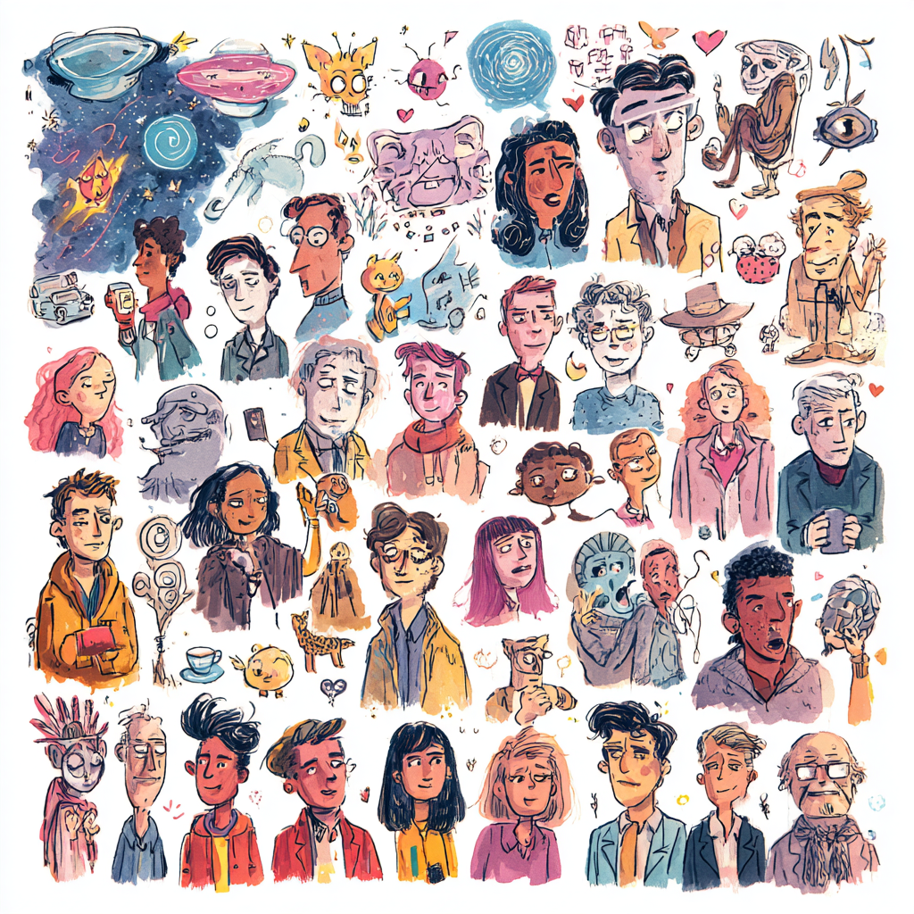
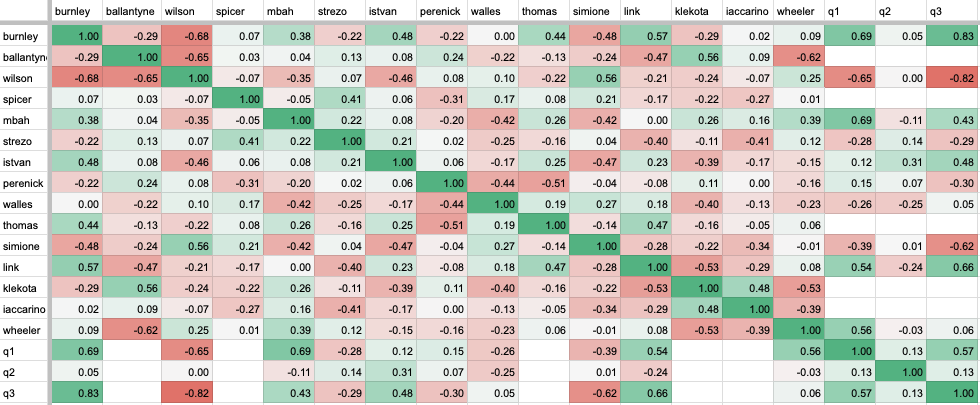

AI as Co-Constructor
How should we approach creative collaboration with AI?
By Ben Wheeler, 2025
AI disclosure: large language models and generative AI were used in the creation of the projects mentioned here, and in this page's HTML and CSS, but not used in creating this page's written text.
The advent of "vibe coding"
It's a disorienting thing to see a field you know well with new eyes, to see its methods and tooling upended. I've been a professional software engineer off and on for more than two decades, but AI-assisted coding has changed the daily work of coders like me radically, and "vibe coding" even more so.
I'm also an educator, and I've been teaching introductory programming for years. I've been watching the advent of vibe coding with a mixture of excitement and unease. MIT professor Mitchell Resnick and MIT researcher Natalie Rusk, co-creators of the Scratch programming language, write that ideal creative educational experiences provide a "low floor" to entry, "wide walls" for breadth of expressive possibilites, and a "high ceiling" allowing for complexity and ambition. Vibe coding holds promise for each of these elements, particularly a floor that is being lowered beyond what any computer science educator might have hoped only a few years ago.
According to some claims, there no longer is any floor at all; anyone can create software just by describing what they want in natural language. Many of these voices also claim that the walls have never been wider for new computational creators, and that there is practically no ceiling, either.
How true are these claims? And how can educators, and designers of creative educational software, make use of these new technologies to guide learners to the most stimulating, empowering and enriching paths to digital creativity? These are questions I have been hoping to answer in my assistant teaching a new course at Harvard's Graduate School of Education, T564A: "Vibe Coding".
Project inspirations
I'm going to use one of the projects I made for this course as an example of the current state of vibe coding, and what it currently does, and doesn't, afford.
The initial inspirations for this project were three very different games I'd loved:
1. Social Climber, an 80's game for the Macintosh whose simple gameplay and black and white graphics made it a favorite with my siblings:
2. A Dark Room, a mostly text-based game (with some creative use of buttons, progress bars and ASCII graphics) whose scenario and meaning unfold in unexpected ways:
and 3. Frog Fractions, an infamous bait-and-switch of a game that isn't what it initially appears to be, and whose gameplay rules change as you play it.
As I sat down to compose my first prompt for an LLM coding assistant, I was vaguely imagining a game with Social Climber's visual aesthetics, A Dark Room's atmosphere of guilt and solitude, and Frog Fractions' reshapable rules and meta-gameplay.
The first prompt
I used Anthropic's Claude Code on the commandline, and began with this prompt:
let's make a very simple game, with black and white pixel graphics. The aesthetic is Macintosh SE shareware. The player is a woman with an unbrella, and pressing the up button opens the umbrella and pushes it upward to repel falling obstacles. The obstacles should be funny -- an angry cat, a meteor, an old boot, a coke can. She can move left and right, but not jump.
Note the interpersonal tone I struck without thinking about it, as though this were a collaborator, not a tool. Note also my initial misspelling of "umbrella", the sort of error that traditional programming would choke on, but which large language models handle without blinking. Note also the specifics I give: precise button input, a narrow aesthetic reference, item examples and a note on tone.
In my helping students in this class, a common problem was that they imagined many of these specific elements, but did not describe them in the prompts they gave to coding assistants -- a mistake that echoes one of the perennial mistakes that people make in writing code the traditional way, where we conceive of logical steps that we neglect to include in the actual code we write.
Not to say that I am immune from this mistake; there was plenty that was percolating in my head when I wrote this prompt, that I didn't put into the prompt itself. One of the beauties of vibe coding is that you do not need to design exhaustively before creating something; creation is so fast that you can give partial descriptions, and iterate from there. I gave explicit form only to what was firmly clear in my mind, unsure what form the other elements would take.
I quickly followed this up with a second prompt:
Can you add a power meter, which starts full, but declines the longer you have the umbrella open? When the umbrella is closed, it slowly recharges. And when obstacles hit the ground, they pile up -- and the more obstacles piled in a particular spot, the longer it takes to move left and right across that area.
After a few initial prompts like this, I had a playable game, albeit a very buggy one. Witness the bizarre way the falling objects accelerate upwards when they hit the bottom of the screen:
Version 1.0
Controls: left and right arrows: move; up arrow: open umbrellaThere was plenty else that was wrong. For one thing, I could not get the objects to stack as I intended.
I tried correcting the LLM, with a snarky "actually":
let's make the power recharge more slowly. also, have the objects actually stay on the ground when they hit it
and using all caps for emphasis:
can the obstacles that fall to the ground actually pile on TOP of each other, so that they only slightly overlap, instead of occupying the same exact space?
Slowly, with many prompts, I was coaxing Claude to improve the stacking behavior, though it still included large amounts of padding around the objects as they stacked:
Version 1.1
Controls: left and right arrows: move; up arrow: open umbrellaMeanwhile, I was trying to expand the scope of the game, and to introduce some of the meta-game elements. I tried to describe these at length:
OK, now I want to expand the scope of the game. I want it to incorporate story elements... [text omitted] When you reach zero, a "TEXT CHOICE" appears. Each choice starts with a 10-30 word bit of story, and then introduces a choice that must CHANGE THE RULES AND APPEARANCE OF THE GAME ITSELF. The first text should be: "Are these obstacles falling just on me? Why are they keeping me away from those I love? Should I fight them, or try to learn more about why they are falling?" The first choice should be "A) Fight them!" or "B) Learn about them" If you choose A, your umbrella should grow, and your power meter should become larger. If you choose B, then a "Knowledge" meter should appear... [more prompt text omitted]
and:
once the knowledge meter fills up entirely, it should trigger a new text prompt. This one should read: "I have learned so much, and yet I feel more mystified than before. How can I bridge this gap?". Choice A should be "Try to learn faster", and that should increase your movement speed, reset the knowledge meter, and increase the rate of knowledge learning. Choice B should be "Meditate", and that should reset the knowledge meter, but now it won't increase when you touch obstacles -- it increases only when you are completely still, and increases slowly.
These and a few more prompts produced the first version that felt like it "clicked" for me. It was possible to reach the first decision point reliably, although plenty still didn't work right. For instance, the "learning" option didn't actually allow you to proceed; the learning meter wouldn't fill up.
See if you can deflect enough objects to get the "countdown" down to zero, and reach the first decision point:
Version 1.6
Controls: left and right arrows: move; up arrow: open umbrellaAt this stage in the process, a dozen or so prompts into iterating, I'm always fascinated by the gap between the huge amount that an LLM can understand and do, and the difficulty it seems to have in correcting its own errors. I went through many prompts trying to get the knowledge meter to work correctly, and to get the objects that strike the ground to stack and interact with the player and each other as I intended. Try as I might, I could not get Claude Code to handle the physical interactions between objects as I intended:
So, the contact detection is still off -- obstacles seem to "jump" into place when they are near, before they are actually touching other objects. Also, in the "learning" phose if you pick B initially, falling objects don't trigger learning when they touch you anymore -- can you expand that contact field, so that learning does get triggered?
I eventually suggested that the LLM redo the physics logic from scratch:
make sure that when obstacles are cleared, the obstacles ABOVE them fall down due to gravity! This may take a major rewrite of the physics logic.
This seemed to make a significant difference.
Eventually, after 24 prompt/build iterations, I reached a stopping point, with a fairly playable game that only has a few branching decisions, but ones that basically work! (I especially like "meditation", if you can find it!)
At some point along the way, I decided that the player character was Victorian-era, and that the cascade of mysterious objects was a cosmic sign of the crumbling and overthrow of the empire she was part of. (This is very much in the spirit of one of the inspiring games I mentioned above.)
Hint: when your character has chosen to "learn" about the mysterious objects, should you keep deflecting them?
Version 1.10
Controls: left and right arrows: move; up arrow: open umbrellaThe hidden prompts
As a side note, when I accessed Claude Code's prompt history to review the prompts I had used, I found that every dozen prompts or so, Claude was running out of capacity in its context history, and it was internally distilling our chat history into a summary, and feeding this to a fresh chat context. These internal summaries are a fascinating window into what it had drawn from my prompts, and from my cajoling. Here's the first example, edited for clarity and brevity:This session is being continued from a previous conversation that ran out of context. The conversation is summarized below:
Analysis:
Let me chronologically analyze this conversation:
1. **Game Creation Request**: User wanted a simple black and white pixel graphics game with Macintosh SE shareware aesthetic
- Player: woman with umbrella
- Mechanics: up button opens umbrella to deflect falling obstacles... [more text omitted]
2. **Power Meter Request**: User wanted a power meter that drains when umbrella is open and recharges when closed
- Also wanted ground piling system where obstacles accumulate and slow movement
- I implemented both features with visual feedback
3. **Refinement Requests**:
- Power recharge should be slower (changed from 0.3 to 0.1)
- Objects should visibly pile on ground - implemented stacking with 8-pixel overlap
- Movement slowdown should be stronger (changed from 30% min to 15% min, increased slowdown rate)
[Continues for another 100 or so lines, including portions of the code itself]
An immediate thought I had when discovering these was that I wished that such a current description of Claude's understanding were made available to me as an editable, two-way document, something that would both capture context, and allow me to adjust it. It's striking, for example, that my sporadic use of ALL CAPS to urge the LLM to take some instruction seriously did not leave much of an impression on these summaries!
Exploratory AI interfaces
Impressively, Claude Code added "learning" text that I did not compose, which was in keeping with the game's tone of mystery. However, it didn't seem prepared to compose entire branches of the game's story tree. Currently, in my experience, LLM imagination only goes so far; it is excellent at producing variations on a theme, but noticeably poor at less linear sorts of imaginative extrapolation.
Also, as you can see at a glance, though the gameplay evolved through these iterations, the basic design remained. The assumptions that the LLM made early on--most of them in its very first prompt--were essentially locked-in, unlikely to be revisited unless I explicitly demanded that they be modified. This is a typical pattern with vibe coding, an implicit element of the design process which has outsized, arbitrary power.
As an alternative, what if code creation LLMs responded to initial prompts by creating several initial versions of an application? Or, what if the LLM engaged in some question-and-answer with the user about visual design inspirations, types of interaction, tone and scope?
On reflection, it's fairly arbitrary that we expect code assistant prompts to produce one, and only one, code changeset. This seems to be an artifact of two things: 1) the fact that LLMs were first presented to us in chat form, where a single response best replicates chat with a human; and 2) the fact that code version software like git is built on the human-only workflow of a single changeset at a time. But in a world where computation is (relatively) inexpensive and human time is costly, why shouldn't our tools propose a variety of possible actions in responses to our prompts, and provide us an interface for exploring and comparing these?
It's astonishing how early in the history of human-computer interfaces it became clear that the combination of human and computer would be far more powerful than either on their own.
In Hubert L. Dreyfus’s What Computers Can’t Do: A Critique of Artificial Reason (1972), he quotes Walter Rosenblith as saying, "Man and computer is capable of accomplishing things that neither of them can do alone." (p. 213)

Midjourney prompt: In playful, hand-drawn artwork that isn't too busy, show me romance, humor, drama, human connection, caring, spirituality, cosmic imagination everything that computers CAN'T do. If you're depicting people, make sure they represent a diverse range of humanity.
And in J.C.R. Licklider's 1960 essay “Man-Computer Symbiosis,” he speculates that:If those problems can be solved in such a way as to create a symbiotic relation between a man and a fast information-retrieval and data-processing machine, however, it seems evident that the cooperative interaction would greatly improve the thinking process. (p. 6)We are still only at the beginning of seeing the potential forms of these "cooperative interactions". I suspect that the current convention of linear chat interfaces will be only one of many different ways that humans can explore the space of possibilities along with AI assistants, and that the most effective of these will be those that allow the most continuous and fluid forms of interplay.
The illusion of understanding
In my work with students in this course, and in my own vibe coding attempts, it's funny how often we reach a point where we are reduced to begging the LLM to obey us. I used all caps in places, and tried creative ways to repeat myself, and to restate what I had asked (and which the LLM had failed to do). At times, the problem has been that we are bumping up against some specific technical limitation; e.g., Claude Code can currently produce only simple pixel images, not complex cartoon-style or photorealistic ones.
Given the aplomb with which these models generate code, it can be easy to forget that they do not truly understand the code or the intent behind it. This illusion of understanding can be surprising, and frustrating--especially when the human operator is reduced to ever-more dramatic forms of emphasis.
Hubert Dreyfus also writes:
Game playing, language translation, problem solving, and pattern recognition, each depends on specific forms of human ‘information processing,’ which are in turn based on the human way of being in the world. And this way of being-in-a-situation turns out to be unprogrammable in principle using presently conceivable techniques. (p. 214-215)
It's fascinating that even as the recent AI revolution has squarely surpassed the "presently conceivable techniques" of Dreyfus's era, the question of the limits of AI to capture context remain--and his point about the human context of "being-in-a-situation" is still salient. A key question is whether the limits we're seeing today are a matter of being "unprogrammable", as Dreyfus suspected of his era, or whether they, too, can be captured adequately by our simplifying models.
Are the ways that AI models approximate and imitate understanding of context bumping up against a limitation that they cannot transcend? Or, will they continue to improve and expand, so that the sorts of insurmountable frustrations of misunderstanding that vibe coders encounter so frequently today will be made rare? We are already seeing that simple rules, when implemented at a large enough scale, can replicate some forms of understanding shockingly well. Are we near an asymptotic boundary in simulating understanding comprehensively using masses of simple rules, or will we punch through the perceived limits?
Persuadability
While we wait for more sophisticated base models (and at the rate things are going, we may not have to wait long), we might equip our existing models better to respond more fluidly to degrees of human emphasis, and even exasperation. I knew enough about the likely implementation of gravity and edge detection in my game's code to eventually instruct the LLM to rebuild its physics model from scratch. But this type of teardown should be something code assistants are ready to do, if users indicate that they are repeating themselves and growing frustrated.
That is, the models should be build with an awareness of their own stubbornness and limitations, and there should be a qualitatively different response that can be activated when their limits are taking the spotlight and causing problems. At the least, they should be able to explain to the user what is going wrong, and whether it is a technical boundary or a problem of understanding!
The meta-work of software engineering
For another project for this course, I set out to build something small but genuinely useful to me. I’m a heavy user of the productivity app Todoist, and for a long time I’ve wanted a tool that would take my entire, sometimes overwhelming task list for the present day, and present me with just one single task to work on next. On the surface, this would appear to be simple enough--just some logic to read the list, pick a random task, and show it in a minimal interface.
But immediately, I snagged on trying to connect my prototype to Todoist’s API. The LLM was helpful in wading through this world of API keys, credential flows, and permission scopes, but there was no way around my having to do a significant amount of engineering work to get this working. None of this is dramatic or unusual; it’s simply what modern software is like. But it’s a useful reminder that creating software is seldom a matter of only writing textual code; crucially, it encompasses decisions, actions and considerations outside of the mere textual scope, including decisions about the nature of that scope itself.
After several attempts, I decided to sidestep the Todoist integration entirely, and instead dropped some mock data into a public Google Sheet. This let me build the flow of the interface without worrying about credentials at all (though even this simpler setup required some manual debugging!).
Once I did that, I was able to play with the app's interface, and iterate on its look and feel; you can try this interface here.
This approach follows a long-standing best practice in software development: get a simple version working first, and build complexity out from there. This lets you learn from interacting with a small but functioning system, rather than spending hours up front wrestling thorny technical problems. Often, after trying out your demo version, you find yourself changing direction anyway--rendering the deeper technical work unnecessary. I see these higher-scope roles as always remaining the domain of humans. J.C.R. Licklider seems to have anticipated something along these lines back in 1960, writing:
As has been said in various ways, men are noisy, narrow-band devices, but their nervous systems have very many parallel and simultaneously active channels. Relative to men, computing machines are very fast and very accurate, but they are constrained to perform only one or a few elementary operations at a time. Men are flexible, capable of ‘programming themselves contingently’ on the basis of newly received information. Computing machines are single-minded, constrained by their ‘pre-programming.’ (p. 6)
I might be stretching Licklider's "programming themselves contingently" a bit here, beyond merely incorporating "newly received information" and into broader judgments about project purpose, scope and direction. But I think the essence of his point remains: humans can alter the bounds of our perspective and frame of reference in ways that mathematical models, no matter how elaborate, cannot.
As vibe coding matures, some of these boundaries will dissolve--and as they do, it may become hard to remember why we perceived them as so impermeable. For instance, vibe coding tools can already understand and pull in multiple third party libraries and frameworks; I was able to make this animation that uses the p5js library with just a few prompts:

(It may not look like much at first, but if you let it keep running, it looks something like the surface of the sun--at least, to me!):
If we accept this trend of expanding coding assistant reach, and assume it continues to absorb more areas of system complexity, we can see that AI applications will certainly become more capable of acting "agentically" to, say, handle setup of multiple interacting components via APIs. But I suspect there will always be meta-work of software engineering where human judgment will remain essential.
Human considerations
While assisting with this course, I was also running for local office in my city, Somerville MA. I was curious about the ways that voters associate and group various candidates who they choose to support; I wondered if it would be possible to use the vote totals across the city's 32 voting districts to see which candidates are correlated positively with each other, and which negatively.
First I produced a spreadsheet with a correlation table, to see if there was enough signal amidst the noise, with so few data points:

There were some believable correlations evident in the table, so I proceeded to use Claude Code to generate a visualization of the correlations.
This was perhaps the most impressed I was with the LLM capabilities during the course, though I shouldn't have been surprised; this task is a perfect example of one with a wealth of good examples online. It produced a graph that was not only accurate and interactive using the buttons I specified, but also manipulable using the mouse--an unexpected treat. You can try it out here.

Additionally, there was a more subtle aspect that arose here. Inspired by a student who had created an 8-bit-style pixel portrait of me, I used ChatGPT 5 to produce these for each candidate, thinking that it would be fun to have these be part of the visualization. However, I quickly realized that this was a bad idea; some candidates might not appreciate being represented in this way, since it contains an element of caricature, and I decided to remove these from the final version.
Pixel caricatures of me (left) and mayor-elect Jake Wilson (right), the most prominent public figure in the set, and one I feel comfortable sharing. Generated by ChatGPT 5.
Joseph Weizenbaum, creator of the therapist-imitating chatbot ELIZA, was concerned about these questions of human judgement, and worried that empowering computers would place such moral considerations in danger. In Ben Tarnoff's article Weizenbaum’s nightmares: how the inventor of the first chatbot turned against AI, he writes:
For Weizenbaum, judgment involves choices that are guided by values. These values are acquired through the course of our life experience and are necessarily qualitative: they cannot be captured in code. Calculation, by contrast, is quantitative. It uses a technical calculus to arrive at a decision. Computers are only capable of calculation, not judgment. This is because they are not human, which is to say, they do not have a human history--they were not born to mothers, they did not have a childhood, they do not inhabit human bodies or possess a human psyche with a human unconscious--and so do not have the basis from which to form values.
I don't mean to overstate the mild risk of sharing AI-generated pixel caricatures of public figures. But not having drawn the pixels myself, or even employing a human artist to do so, it is easy for small bits of inconsideration to creep in--including, for example, elements of sexual objectivity or racist stereotyping that the LLM may have absorbed from its training data. The more we remove humans from the loop--or even, relegate them to occasional oversight--the more we abdicate this moral role.
Moving between vibe and manual coding
However, this correlation visualizer was also the project where I had to do the most manual intervention as a programmer. There were simply too many nuances of color, length and size for me to describe adequately in prompts, iteration by iteration; fine-tuning these aspects to my liking would take probably 100 prompts, if it would work at all; or I could read the short code the LLM had written, find the variables I needed to tweak (or, in some cases, create them), and get them right in a few tries.
In fact, reviewing the prompts I used, I see that there were many places in this project's development that I brought to bear my knowledge as a programmer. Examples:
can you move most of the javascript to a separate file, and have it included by index.html?
help me understand which lines of code would have to change to adjust the basic displayed distance between nodes
is absCorr actually being used for anything? Isn't absCorr * absCorr equal to correlation * correlation, no matter what sign correlation has?
so, I changed something in correl_data.json but it's not hard reloading... do we need to somehow cache bust that too???
For the nodes array in the json file, can each be an object with fields "label", and "display", where display is 0 or 1, and nodes only appear in the graph if display is 1?
can you add to the "nodes" objects a property called "size", and for "q3", set size to 0.6? (it can be missing from the other objects.) In the code, multiply the display size for each node by its "size" property, with a default "size" value of 1.0
When people speak of vibe coding as making code project creation "easy", I often wonder about the gap between my capability and that of a complete novice. Certainly, a novice could have built a correlation visualizer like mine without my programming knowledge. But how much more work and time would it have taken them--and would they be as able to explore the space of possibilities as I was,?
The purposes of code creation
Just as the internet has (unfortunately) unbundled advertising from journalism, and video from shared screens to personal ones, so AI-assisted coding is unbundling the creative experience of making programs from the educational experience of learning to code. It used to be that the only way to make any program of more than basic logical novelty required learning a significant amount of programming; now, vibe coding allows the creation of complex programs--albeit, not fully the programs that their creators always intend--without learning any code at all.
For the entirety of the history of computer programming, up until a few years ago, simple programs and novice programming knowledge came together in an elegant bundle. Want to make a virtual pet game, that works the way you want? You might find a tutorial, but you'll have to code it yourself. This provided an on-ramp to coding knowledge for millions of learners, and motivation to make the ascent.
@Zinnea from Scratch's tutorial on creating a virtual pet project, a shining example of enthusiasm driving learning
That this no longer holds presents several problems, but also opportunities. One problem is that people who wish to create the virtual pet game may never learn to code. Another problem is that AI-assisted coding is much more powerful if you have coding knowledge to supplement it, either in making larger projects beyond any single context window, or in more productive iteration along the way.
Access to computational composition
In Bacteria to AI: Human Futures with Our Nonhuman Symbionts, N. Katherine Hayes explains that despite all of the problems that the onset of the AI age brings, it has already become integrated into our societies in ways that make it impossible to disentangle. “What is undeniable, in my view, is that the symbiosis has advanced so far that developed societies cannot afford not to use computational media.” (introduction)This is partially a matter of merely keeping up, of staying compatibile with a system where illegibility equals nonexistence. But use of computational media also offers opportunities. One is in the capturing and manipulation of context, along the lines of the hidden prompts in Claude Code that I found. If we can capture systems of rules and understandings--from team agreements to organizational standards to procedural conventions to personal philosophies--make them visible and even editable, we may unlock all sorts of capabilities. Picture a self-assembling compilation of best practices for a team, that can give team members a heads up when they're broken, but which can also be adjusted when it's off-base.
I suspect this surfacing of procedure may provide for a wide democratization of code, at least of a sort. Programmers often draft logical steps in "pseudocode", human-readable steps that cannot be actually executed by a computer, since they are not in a coding language. But now pseudocode, and other intermediary forms of computational logic, can be manipulated and run in their own right. I can imagine, say, conference organizers setting up rules so that attendees who check in are emailed a schedule, which is truncated to exclude events in the past. Instead of using someone else's software for this--and being unexpectedly stuck with its assumptions--such knowledge workers might increasingly create their own, and get used to modifying its rules.
And then there's the opportunity of the unknown. In such a time of fast-changing technological power, it's hard to see our way around the corner to what these changes will ultimately enable. These changes come with immense risks and costs. But even if the net result of this path is damaging, there will be positive experiences that were not possible before, forms of empowerment and expressive exploration that we don't yet even understand enough to imagine.